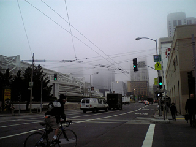

Pebbleの管理画面でサムネイル作成を可能にするため、ちょっと調査してみました。
検証に使ったのは先週携帯で撮った霧のサンフランシスコ。
1600x1200でサイズは380kb。
このサムネイルは iPhoto で作成したもの。
綺麗な縮小画像を作るにはAreaAveragingScaleFilterを使うのがキレイ！って情報がちらほらある。
どうやら内部的にAreaAveragingScaleFilter を使ってくれるっぽい BufferedImage#getScaledInstance() を使って実験。
直接 AreaAveragingScaleFilter を触るよりコード量が少なさそうなので。
(1)コードはこんな感じ
{kind=link}
private static void scaledInstance() throws Exception {
int height = 240;
int width = 320;
FileInputStream fis
= new FileInputStream("./original.jpg");
BufferedImage image = ImageIO.read(fis);
fis.close();
BufferedImage shrinkImage
= new BufferedImage(width, height, image.getType());
shrinkImage.getGraphics()
.drawImage(image.getScaledInstance(width, height
, Image.SCALE_AREA_AVERAGING)
, 0, 0, width, height, null);
ImageIO.write(shrinkImage, "jpg", new File("./2.jpg"));
}
・結果はこんな感じ
まぁそんなシャギーも目立たないし悪くない感じです。
ただやたら時間がかかります。80秒くらい。
パフォーマンスを求めてMovableTypeから移行したのにこれじゃだめですね。
今度はそのままdrawImageする方法。
(2)コードはこんな感じ
private static void graphics2dnohints() throws Exception {
int width = 320;
int height = 240;
FileInputStream fis = new FileInputStream("original.jpg");
BufferedImage image = ImageIO.read(fis);
fis.close();
BufferedImage shrinkImage
= new BufferedImage(width,height, image.getType());
Graphics2D g2d = shrinkImage.createGraphics();
g2d.drawImage(image, 0, 0, width, height, null);
ImageIO.write(shrinkImage, "jpg", new File("graphics2dnohints.jpg"));
}
・結果はこんな感じ
１秒くらいで完了。かなり早いけどあり得ないくらい汚いです。
単に間引いてるだけですね。
じっとAPIを見つめているとGraphics2D#setRenderingHint() ってメソッドが見えてきました。
なんとなくキレイにしてくれそうなオプションを設定して再挑戦。
(3)コードはこんな感じ
private static void graphics2d() throws Exception {
int width = 320;
int height = 240;
FileInputStream fis = new FileInputStream("original.jpg");
BufferedImage image = ImageIO.read(fis);
fis.close();
BufferedImage shrinkImage = new BufferedImage(width,height, image.getType());
Graphics2D g2d = shrinkImage.createGraphics();
g2d.setRenderingHint(RenderingHints.KEY_ALPHA_INTERPOLATION,
RenderingHints.VALUE_ALPHA_INTERPOLATION_QUALITY);
g2d.setRenderingHint(RenderingHints.KEY_ANTIALIASING,
RenderingHints.VALUE_ANTIALIAS_ON);
g2d.setRenderingHint(RenderingHints.KEY_COLOR_RENDERING,
RenderingHints.VALUE_COLOR_RENDER_QUALITY);
g2d.setRenderingHint(RenderingHints.KEY_DITHERING,
RenderingHints.VALUE_DITHER_ENABLE);
g2d.setRenderingHint(RenderingHints.KEY_TEXT_ANTIALIASING,
RenderingHints.VALUE_TEXT_ANTIALIAS_ON);
g2d.setRenderingHint(RenderingHints.KEY_RENDERING,
RenderingHints.VALUE_RENDER_QUALITY);
g2d.setRenderingHint(RenderingHints.KEY_INTERPOLATION,
RenderingHints.VALUE_INTERPOLATION_BILINEAR);
g2d.setRenderingHint(RenderingHints.KEY_FRACTIONALMETRICS,
RenderingHints.VALUE_FRACTIONALMETRICS_ON);
g2d.setRenderingHint(RenderingHints.KEY_STROKE_CONTROL,
RenderingHints.VALUE_STROKE_NORMALIZE);
g2d.drawImage(image, 0, 0, width, height, null);
ImageIO.write(shrinkImage, "jpg", new File("graphics2d.jpg"));
}
・結果はこんな感じ
ん、悪くない。むしろ最初の遅いヤツよりキレイなんじゃないの？
しかも早いです。パフォーマンスは体感的にさっきと変わらない感じ。
ではパフォーマンスをざっと検証。
・コードはこんな感じ
public static void main(String[] args) throws Exception {
long before;
double elapsed;
for (int i = 0; i < 10; i++) {
//hotspotをVMに教えてあげる
scaledInstance();
graphics2dnohints();
graphics2d();
}
before = System.currentTimeMillis();
System.out.println("getScaledInstance()");
scaledInstance();
elapsed = (System.currentTimeMillis() - before) / 1000d;
System.out.println(elapsed + " secs");
before = System.currentTimeMillis();
System.out.println("graphics2dnohints()");
graphics2dnohints();
elapsed = (System.currentTimeMillis() - before) / 1000d;
System.out.println(elapsed + " secs");
before = System.currentTimeMillis();
System.out.println("graphics2d()");
graphics2d();
elapsed = (System.currentTimeMillis() - before) / 1000d;
System.out.println(elapsed + " secs");
}
結果はこんな感じ。
getScaledInstance()
72.756 secs
graphics2dnohints()
0.698 secs
graphics2d()
1.463 secs
PhotoShop Elements の結果も加えて並べてみた。
|
iPhoto:2秒くらい - 38 KB |
 PhotoShop Elements2.0(jpeg 最高画質):2秒くらい - 56 KB |
|
(1)getScaledInstance(Image.SCALE_AREA_AVERAGING) 72.756 秒 - 11 KB |
|
|
(2)普通にdrawImage()(レンダリングヒントなし):0.698 秒 - 13 KB |
(3)普通にdrawImage()(レンダリングヒント付き):1.463 秒 - 10 KB |
さすがにiPhotoとPhoto Shopはほぼ互角に綺麗。iPhotoはなぜか若干暗い。
Javaで処理する場合どれがいいかなー・・って愚問ですね。
レンダリングヒント付きでdrawImageが一番品質対時間比に優れてます。
Javaで作ったサムネイルはどれも細い線の再現性がイマイチで、iPhoto のサムネイルに比べやや眠たい感じだけど十分実用的。
しかし(1)より(3)の方が綺麗に見える。50倍くらい早く出来上がってるんだけど。
(1)は(3)に比べファイルサイズがやや大きいにも関わらずjpeg的なブロックノイズが目立ちます。
返信 |
固定リンク
Re: Javaでサムネイル作成
シンプルで明快に説明されていたので、
助かりました。 数分で理解でき実行までできるコード最高です。
当初ImageMagicをラップしようかと思っていましたが、こちらのコードを利用させていただきます。
JavaAPIを眺めてみるべきだと反省しています。ありがとうございました
投稿者 miyadai : 2007/12/08 16:19:41 JST
APIを眺めてもどこから手をつけて良いかわからないですよね。
私も手間取ったので、メモを参考にしていただけて幸いです。
私も手間取ったので、メモを参考にしていただけて幸いです。
投稿者 Yusuke : 2007/12/09 0:11:40 JST
投稿者 侍ズム : 2006/02/14 8:08:15 JST
トラックバックURL http://yusuke.homeip.net/diary/.action?entry=1139476974993